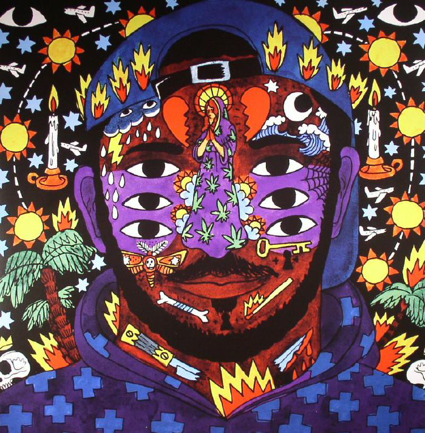

YOU ARE
THE ONE, Kaytranada 2010
WEEK FIVE SONIC COMPOSITIONS
Celestin began his career under the name Kaytradamus in 2010. He released two projects as Kaytradamus before changing his name to 'Kaytranada' in 2012. Kaytranada has released a total of thirteen projects and forty-one remixes. Kaytranada has toured more than 50 Canadian, American, European and Australian cities.During 2015, Kaytranada opened for two nights of Madonna's Rebel Heart Tour, one in Canada and one in the United States. In December 2014 he signed an exclusive recording agreement with XL Recordings. His debut album, 99.9%, was released on May 6, 2016. The album includes features from GoldLink, AlunaGeorge, Syd tha Kyd, Anderson Paak, and Vic Mensa among others.